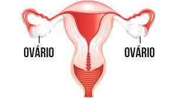

Ovários

O ovário tem o formato de uma elipse, com aproximadamente 2 a 4 centímetros de comprimento. São um par constituído por uma superfície feita de tecido conectivo chamado estroma. Cada ovário está próximo ao útero, próximo às bandas das paredes da pelve menor, um pouco atrás das tubas uterinas e o espaço onde estão é chamado de fossa ovárica.
Além disso, estão conectados com os ligamentos do mesovário (uma dobra peritoneal – também chamada de dobra dupla ou curta – é um espaço localizado entre o ovário e a folha posterior do ligamento largo. É uma dobradiça que permite o movimento semelhante a uma porta e funciona como hilo de um órgão, a dobra está localizada onde está faltando o revestimento peritoneal do ovário).
Uma boa quantidade deste órgão é preenchida por folículos ovarianos em vários estados: desenvolvimento, já desenvolvido e no processo de danificação. Esse local é vascularizado e cheio de nervos.